A B3 fechou a quarta (25) em 166.684 pontos, com Vale em alta de 3,10%, fim de dez quedas seguidas. O dólar recuou para R$ 5,817 e os juros futuros caíram: o DI de janeiro de 2028 foi de 14,44% para 14,28%. Pág. 4.
A Guarda Revolucionária disse que um navio de gás natural liquefeito pegou fogo após bater numa mina; a Reuters não conseguiu verificar. O Irã condiciona a reabertura do estreito ao fim do bloqueio naval dos EUA. Pág. 5.
Willis Carrier nasceu em 26/11/1876. No Ceará a 41 °C, a ideia dele vale ouro. Pág. 6.
🛍️ Black Friday amanhã: Procon-RJ achou geladeira 258% mais cara antes da "promoção". Págs. 18–19.
💊 Queimado grave · gota · acesso guiado · Brugada · estridor pós-extubação (8–10) · 📜 Arcanos (24–25) · 🤝 Humanitário (31).
Sanção. A página oficial do Congresso registra o PLP 299/2026 como "remetido à sanção" desde 24/11, com prazo para sanção ou veto até 14/12. Não há número de lei complementar nem veto publicados. O projeto, de autoria do senador Jaques Wagner (PT-BA), foi aprovado na Câmara em 23/11.
A PEC. Reportagens da CNN Brasil e do Money Times dizem que o presidente Lula autorizou a equipe econômica a preparar uma PEC com novos limites para despesas obrigatórias. Na manhã de quarta (25), o ministro do Planejamento, Bruno Moretti, disse que o governo ainda não tem um texto pronto. Nada foi enviado ao Congresso.
Déficit. O relatório bimestral, divulgado na noite de terça (24), elevou a projeção de déficit primário de 2026 de R$ 80,9 bilhões para R$ 89,3 bilhões, 0,66% do PIB (IstoÉ Dinheiro, 25/11).
Estatais. O Senado aprovou em votação simbólica a urgência do PL 2.896/2022, que reduz de 3 anos para 30 dias a quarentena para dirigir estatais e agências e eleva o teto de publicidade das estatais de 0,5% para 2% da receita. O presidente do Senado, Davi Alcolumbre, marcou o mérito para 1º/12 (CNN Brasil, 25/11).
STF. O presidente da Corte, Edson Fachin, pautou para hoje, às 14h, o piso nacional do magistério (Temas 1.218 e 1.324). Na quarta, a pauta tinha dez processos, entre eles o porte de arma por guardas municipais (ADI 7717) e a Lei da Liberdade Econômica (ADI 6528); os resultados não foram localizados no fechamento.
Polícia Federal. A Operação Recalculando Rota cumpriu 6 mandados no Pará, em Goiás e em São Paulo contra suspeitos de tráfico internacional; o bloqueio pedido pode chegar a R$ 300 milhões (PF, via imprensa regional, 25/11).
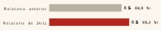
Até o fechamento, nenhum ministro foi anunciado oficialmente. Uma coluna do SBT News, com fontes não identificadas, diz que o presidente convidou o banqueiro Luiz Carlos Trabuco para a Fazenda; o Planalto não confirmou.
A Receita arrecadou R$ 293,975 bilhões em outubro, recorde para o mês e alta de 7,28% (dados de 24/11).
1º/12: mérito do PL das estatais no Senado e votação do PL das Big Techs na Câmara. 8 e 9/12: Copom. 14/12: fim do prazo de sanção do PLP 299.
A nº 019 citou a sanção do pacote fiscal relatada pela imprensa. O registro oficial mostra apenas o envio à sanção em 24/11; o ato ainda não foi publicado.
O jornal não toma partido. Publica fatos, números oficiais e declarações atribuídas, com o mesmo tratamento a todos os lados.
Mpox. O IntegraSUS, atualizado na quarta (25), mostra 230 casos confirmados, 332 em investigação e 794 notificações; Fortaleza tem 190 e Sobral, 7 (eram 4 na semana passada), segundo o CN7. Os números mudam conforme a data de corte: 205 até 23/11 e 221 até 24/11. O estado tem 500 doses de vacina para pós-exposição de contatos de 18 a 49 anos, de preferência até 4 dias após o contato (O Povo, 24/11).
Calor. Para hoje, a Funceme prevê tempo firme, máximas de 32 °C a 41 °C e umidade mínima entre 20% e 35%; os picos ficam no Jaguaribe, no Sertão Central e nos Inhamuns. Na terça, Varjota, vizinha de Sobral, marcou 39,3 °C (O Povo).
Fogo e seca. Decreto assinado em 19/11 declarou emergência ambiental por risco de incêndios em todo o Ceará, por causa do El Niño; no Noroeste, vale até janeiro de 2027. O Monitor de Secas aponta seca em 100% do território, e 40 dos 144 açudes monitorados pela Cogerh estavam abaixo de 30% em 11/11.
Educação. Professores da rede municipal de Sobral fizeram ato na Câmara, em 24/11, contra a suspensão da gratificação GENTE; o sindicato da categoria (Sindsems) entrou com mandado de segurança (Sobral em Revista). A Prefeitura não se manifestou nas matérias consultadas.
Santa Casa. Em 19/11, na Câmara, o diretor da Santa Casa de Sobral relatou déficit de cerca de R$ 3 milhões por mês e pediu emendas e doações. O hospital é referência de alta complexidade para 55 municípios. Pág. 31.
Governo. A vice-governadora Jade Romero está no exercício do cargo até 29/11, durante viagem do governador à Europa (CN7).
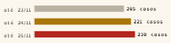
Sex 27, 8h: "Black Friday de Empregos" do Sine/IDT no Vapt Vupt, com mais de 100 vagas e sem agendamento. Hoje e amanhã, 8h–12h: atendimento do Refis municipal na Praça de Cuba.
Sol forte, ar seco e risco de fogo: evite queimar lixo ou mato, beba água em horários marcados e procure sombra entre 10h e 16h.
Bolsa. O índice oscilou entre 164.042 e 167.105 pontos. A Vale subiu 3,10% e encerrou dez quedas seguidas; a Natura avançou cerca de 10%. A Embraer caiu entre 3,3% e 4%, conforme a fonte, depois da proposta americana de tarifa extra de 10% sobre aviões brasileiros (Money Times e BPMoney).
Câmbio e juros. O Banco Central ofertou US$ 2 bilhões em leilões de linha. Na curva, o DI de janeiro de 2035 caiu de 15,23% para 15,07%. O mercado reagiu ao sinal de uma PEC de gastos, ainda sem texto (pág. 2).
EUA. A inflação PCE de outubro subiu 0,3% no mês e 3,8% em 12 meses; o PIB do 3º trimestre, na segunda estimativa, cresceu 4,3% anualizados. Pelo CME FedWatch, citado pelo Money Times, o mercado vê 97,5% de chance de alta de 0,25 ponto no Fed. O S&P 500 caiu 0,25% e a Nasdaq, 0,62%; o Dow Jones subiu 0,33%, a 50.184 pontos.
Hoje. O IBGE divulga o IPCA-15 de novembro; o Bradesco projeta 0,36% no mês. Bolsas de Nova York fechadas. Sexta (27): PNAD Contínua e IGP-M.
Focus (23/11). IPCA de 2026 em 5,15%, Selic de 13,75% no fim do ano e de 13% no fim de 2027, PIB de 1,70% e dólar de R$ 5,55 no fim de 2026.
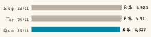
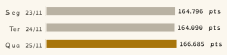
Ormuz. Na noite de quarta (25), a Guarda Revolucionária do Irã disse que um navio de gás natural liquefeito bateu numa mina e pegou fogo; a marinha da Guarda falou em dois petroleiros, e a mídia iraniana em mais três. A Reuters não conseguiu verificar (Arab News/Reuters). Pela mediação do Catar, o Irã oferece reabrir o estreito em 48 horas se os EUA suspenderem o bloqueio naval aos portos iranianos.
Arábia Saudita. Os houthis, do Iêmen, dizem ter atacado a refinaria de Ras Tanura; imagem de satélite publicada pela Reuters mostra fumaça. Na madrugada de hoje, a coalizão saudita afirmou ter interceptado dois mísseis balísticos sobre Riad, e o órgão marítimo britânico UKMTO relatou explosão a 50 milhas náuticas de Dubai, sem feridos (Al Jazeera, 26/11).
Ucrânia. O Estado-Maior ucraniano relatou 151 combates em 24 horas. A usina nuclear de Zaporizhzhia, ocupada pela Rússia, perdeu a energia externa e opera com geradores a diesel, segundo a Energoatom. O chefe do Gabinete do Presidente, Kyrylo Budanov, fala em troca de mais de mil prisioneiros entre o fim de novembro e o início de dezembro.
Otan. O secretário-geral, Mark Rutte, reuniu-se com o presidente Donald Trump na Flórida em 24 e 25/11, a portas fechadas; a pauta prevista era a ajuda à Ucrânia e a meta de gastos de defesa. Os chanceleres da aliança se reúnem em Bruxelas em 2/12.
Ásia. Tropas filipinas treinam perto de terreno estratégico ao sul de Taiwan, onde os EUA vão modernizar um aeroporto (Washington Times, 25/11).
EUA. Hoje é Ação de Graças, feriado nacional; o orçamento federal está financiado por lei provisória até 11/12.
Fora de escala. O canal tem cerca de 39 km no ponto mais estreito, com faixas de navegação de poucos quilômetros. Por ali passa perto de um quinto do petróleo consumido no mundo (EIA). Contexto
Enquanto o Ceará seca, chuvas de frente fria mataram ao menos 8 pessoas no Sul e no Sudeste desde 23/11: 6 no Paraná e 2 em Monte Alegre do Sul (SP), num deslizamento (Xinhua, 25/11). O El Niño costuma secar o Norte e o Nordeste e molhar o Sul.
Alegações de governos e grupos armados aparecem atribuídas. O jornal não toma partido.
Dez atiradores atacaram estação, hotéis, hospital e um centro judaico. A resposta lenta mudou protocolos de segurança urbana e de atendimento a múltiplas vítimas no mundo todo.
Em 1902, ele projetou um sistema para controlar a umidade numa gráfica. Controlar ar e temperatura virou base de UTI, centro cirúrgico e banco de sangue. Hoje, com 41 °C no Ceará, é também prevenção de intermação.
1) Que país é o maior produtor de nióbio? 2) Quem foi o primeiro médico no espaço? 3) Que órgão Joseph Murray transplantou em 1954? 4) Quantos anos faz o nome Microsoft?
PITSTOP. No Canadá, paramédicos aplicaram ceftriaxona intramuscular ou placebo em adultos com suspeita de sepse e hipotensão. A mortalidade hospitalar foi de 18,0% contra 18,4% (risco relativo 0,97; IC 95% 0,81–1,17); eventos adversos atribuídos ao fármaco foram mais comuns, 6,2% contra 1,5% (JAMA, 24/11, via Contagion Live). O braço de fluidos foi publicado à parte.
O que muda. O estudo não mexe na regra hospitalar: no choque séptico, antibiótico na primeira hora depois de colher culturas (SSC 2021). Ele mostra que antecipar alguns minutos na ambulância, sem diagnóstico, não trouxe ganho.
Ebola. O boletim da OMS de 20/11 (dados até 17/11) soma 11.613 casos confirmados e 5.678 mortes pelo vírus Bundibugyo na RD Congo, letalidade de 48,9%, em 8 províncias. Quênia e Nigéria contam 42 dias para declarar o fim de seus surtos. Não há vacina aprovada para essa espécie; duas candidatas entram no estudo Tumaini.
Mpox. A Opas registra 3.269 casos em 13 países das Américas em 2026; o Brasil tem 1.325, em alta desde setembro, e 1 morte. O clado Ib é detectado cada vez mais (Opas, 25/11).
Anvisa. Foi aprovado o Hertuzo (pertuzumabe), biossimilar da Bionovis para câncer de mama HER2-positivo inicial e metastático, pela RE nº 4.517, de 23/11. Ainda não está no SUS (CNN Brasil, 25/11).
Sedação inalatória. Em outubro, o SAVE-ICU (JAMA) não mostrou vantagem do isoflurano sobre a sedação intravenosa: mortalidade de 42,5% contra 43,8%. Contexto
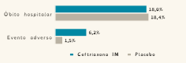
Intervalo de confiança de 0,81 a 1,17 inclui benefício e dano modestos: o estudo é neutro, não "provou que antibiótico precoce não importa".
| Passo | O que fazer | ⚠️ Pegadinha de prova |
|---|---|---|
| 1. Parar a queimadura | Retirar roupas e adornos; água corrente fria por até 20 min nas áreas pequenas; cobrir com plástico limpo e aquecer o paciente. | Resfriar grande área causa hipotermia. Gelo, manteiga e pasta de dente: nunca. |
| 2. Via aérea | Rouquidão, estridor, fuligem na orofaringe, escarro carbonáceo ou queimadura profunda de face e pescoço: intubar cedo, com tubo de bom calibre. | O edema piora nas primeiras 24–48 h; esperar o estridor pode tornar a IOT impossível. |
| 3. Calcular a SCQ | Regra dos nove no adulto; Lund-Browder na criança; palma do paciente com dedos ≈ 1%. Somar só espessura parcial e total. | Primeiro grau (só eritema) não entra na conta. |
| 4. Volume | Ringer lactato: 2 mL × kg × %SCQ no adulto (3 mL na criança, 4 mL no elétrico); metade nas primeiras 8 h, o resto em 16 h. | As 8 h contam desde a queimadura, não desde a chegada. |
| 5. Titular e vigiar | Diurese de 0,5 mL/kg/h no adulto e 1 mL/kg/h na criança; escarotomia em queimadura circunferencial; medir pressão vesical se o abdome endurece. | "Fluid creep" causa síndrome compartimental abdominal. Antibiótico profilático sistêmico: não. |
Conteúdo educativo. Siga o protocolo institucional.
Homem de 45 anos, 70 kg, queimado ao tentar apagar fogo em mato seco: 40% de SCQ de espessura parcial e total, voz rouca, fuligem na boca, SpO₂ de 98% e lactato de 9. Resposta: IOT precoce, O₂ a 100% e carboxi-hemoglobina na gasometria (o oxímetro engana); pensar em cianeto. Ringer 2 × 70 × 40 = 5.600 mL em 24 h, 2.800 mL até a 8ª hora do acidente; diurese-alvo de 35 mL/h.
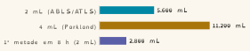
A pele engana: lesão profunda, arritmia e mioglobinúria. ECG, CK e diurese mais alta.
Lavar com muita água por longo tempo. Não tentar neutralizar ácido com base.
Lund-Browder, glicose no soro de manutenção e atenção a padrão "em meia" de bordas nítidas.
| Passo | O que fazer | ⚠️ Pegadinha de prova |
|---|---|---|
| 1. Confirmar | Punção da articulação: cristais de urato monossódico em agulha, com birrefringência negativa à luz polarizada. | O urato sérico pode estar normal na crise; não descarta gota. |
| 2. Afastar infecção | Febre, articulação muito quente ou imunossupressão: Gram, cultura e leucócitos do líquido sinovial antes do antibiótico. | Cristal no líquido não exclui artrite séptica: as duas podem coexistir. |
| 3. Tratar a crise | Começar em até 24 h: colchicina em dose baixa, AINE ou corticoide (oral ou intra-articular), conforme rim, estômago e glicemia. | Dose alta de colchicina não funciona melhor e dá muito mais diarreia. Cuidado com claritromicina e DRC. |
| 4. Indicar hipouricemiante | Forte: tofo, dano radiográfico ou 2 ou mais crises por ano. Condicional: 1ª crise com DRC estágio 3 ou mais, urato > 9 mg/dL ou litíase. | Já usa alopurinol? Não suspenda na crise. Iniciar durante a crise é aceitável (ACR 2020). |
| 5. Tratar até o alvo | Alopurinol de 1ª linha: começar com até 100 mg/dia (50 mg na DRC 4 ou 5) e subir até urato < 6 mg/dL (< 5 com tofos). Profilaxia anti-inflamatória por 3 a 6 meses. | Pesquisar HLA-B*5801 em descendentes do Sudeste Asiático e afro-americanos. Febuxostat tem alerta cardiovascular (CARES). |
Conteúdo educativo. Siga o protocolo institucional.
Homem de 58 anos, hipertenso em uso de hidroclorotiazida, acorda com o hálux vermelho e muito doloroso depois de um churrasco num dia de 40 °C. Afebril, urato de 5,8 mg/dL. Resposta: urato normal não afasta gota. Se houver dúvida, puncionar. Tratar a crise com colchicina em dose baixa, AINE se o rim permitir, ou prednisona. Rever o diurético e, depois da crise, avaliar critérios para alopurinol.
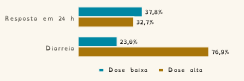
Febre, monoartrite e leucócitos altos no líquido: puncionar antes de culpar o urato.
Pirofosfato de cálcio: idoso, joelho ou punho, cristal romboide com birrefringência positiva fraca.
Vermelhidão sem derrame articular e com dor à movimentação leve sugerem partes moles.
Com o transdutor linear em corte transversal, a veia é ovalada, maior e colapsa à compressão; a artéria é redonda, pulsátil e não colapsa. O Doppler ajuda quando há dúvida. Fora do plano, avance a agulha "caminhando a ponta": incline o transdutor até perder o ponto brilhante e só então avance. No plano, em eixo longo, a agulha aparece inteira. Antes do dilatador, veja o fio-guia dentro da veia no eixo longo. Na jugular interna, a técnica guiada reduz punção arterial e aumenta o acerto na primeira tentativa (revisão Cochrane, 2015). No periférico profundo, use cateter longo, com cerca de dois terços dentro do vaso.
⚠️ Pegadinha: no corte transversal, o ponto brilhante pode ser o corpo da agulha, não a ponta; a ponta já pode estar na parede posterior ou na artéria. No queimado, prefira pele íntegra, mas a pele queimada não impede o acesso de urgência.
O padrão tipo 1 (em cúpula, ou coved) é o único diagnóstico: supra de ST ≥ 2 mm em ao menos uma derivação precordial direita, com T invertida, inclusive com os eletrodos no 2º ou 3º espaço intercostal. O tipo 2, "em sela", sozinho não fecha o diagnóstico. Febre, bloqueadores de canal de sódio (antiarrítmicos classe I, tricíclicos), cocaína e alguns anestésicos podem desmascarar o padrão e precipitar arritmia: no paciente com Brugada, trate a febre cedo. Sobrevivente de parada ou síncope arrítmica recebe CDI; na tempestade elétrica, isoproterenol e quinidina são as opções clássicas.
⚠️ Pegadinha: hipercalemia, intoxicação por tricíclico e eletrodos mal posicionados criam "fenocópias". Corrija a causa e repita o ECG antes de rotular.
Alto risco: intubação traumática, VM por mais de 6 dias, tubo grande, sexo feminino e reintubação após extubação não planejada. Com o cuff desinsuflado, compare o volume inspirado com o expirado: vazamento abaixo de 110 mL (ou de 10% a 15% do volume corrente) sugere edema. A diretriz ATS/CHEST 2017 recomenda, se o teste falhar, corticoide sistêmico ao menos 4 h antes, sem repetir o teste. No ensaio de François (Lancet, 2007), metilprednisolona 20 mg a cada 4 h, começando 12 h antes, reduziu o edema laríngeo de 22% para 3%. Na lesão inalatória, o edema é máximo em 24 a 48 h.
⚠️ Pegadinha: teste "bom" não garante sucesso e teste ruim não proíbe extubar: indica preparar via aérea difícil. VNI não resolve obstrução alta.
Estrutura que colapsa à compressão? Veia.
Único padrão diagnóstico de Brugada? Tipo 1, em cúpula.
Teste de vazamento falhou: o que dar? Corticoide ≥ 4 h antes.
IA. A Axios publicou em 24/11 reportagem com mais de duas dezenas de fontes de empresas como Anthropic e OpenAI sobre dúvidas de funcionários a respeito da segurança de modelos mantidos só para uso interno. Segundo o resumo do The Rundown, a Anthropic respondeu que manter um modelo interno "não o torna seguro", e a OpenAI teria pausado treinos entre 20/9 e 1º/10 após um incidente de acesso indevido à internet. As informações são da reportagem; o jornal não teve acesso independente aos documentos.
Brasil. O marco legal da IA (PL 2338/2023) segue na comissão especial da Câmara, à espera do parecer do relator Aguinaldo Ribeiro (PP-PB); o governo quer votar até dezembro, sem data marcada.
Apple. A versão pública é o iOS 27.2.1, de 9/11, com correções de segurança em conversas de grupo; aparelhos antigos receberam o iOS 26.7.3 e o 18.7.12. O iOS 27.3 está no beta 2, com abas verticais e modo escuro adaptativo no Safari e novas ações da Siri; lançamento esperado em dezembro (MacRumors).
Windows 11. A prévia opcional KB5132057 traz 28 mudanças, como busca mais rápida no Explorador, nova janela "Executar" e Windows Hello que funciona no escuro. Pode pedir um reinício extra por causa da renovação do certificado Secure Boot (BleepingComputer, 20/11).
Android. O Android 17 QPR2 chegou aos Pixel 6a a 11 com o pacote de segurança de novembro (9to5Google).
Dados bancários. O Banco do Brasil confirmou acesso indevido a dados identificado em 12/11: nome, CPF, e-mail, agência e, em parte dos casos, número da conta. Senhas e tokens não foram expostos. O banco alerta para o golpe da "conta segura" (Money Times, 18/11).
iPhone: Ajustes › Geral › Atualização de Software. Windows: prévias opcionais podem esperar a versão de dezembro, se você depende do PC no plantão.
Quem cita seus dados ao telefone não prova que é do banco. Desligue e ligue você para o número do cartão. Banco não pede transferência para "conta segura".
Atualização automática ligada à noite: uma decisão a menos por semana.
| # | Clube | P | J | V | SG |
|---|---|---|---|---|---|
| 1 | Flamengo 🏆 | 80 | 36 | 24 | +43 |
| 2 | Palmeiras | 74 | 37 | 21 | +35 |
| 3 | Cruzeiro | 66 | 36 | 20 | +9 |
| 4 | Fluminense | 63 | 36 | 18 | +15 |
| 5 | Athletico-PR | 57 | 36 | 16 | +9 |
| 6 | Bahia | 54 | 36 | 14 | +4 |
| 7 | Atlético-MG | 52 | 36 | 14 | +4 |
| 8 | Bragantino | 50 | 36 | 14 | +5 |
| 9 | Santos | 50 | 36 | 13 | 0 |
| 10 | Vasco | 47 | 36 | 13 | −5 |
| 11 | São Paulo | 45 | 36 | 12 | −1 |
| 12 | Coritiba | 45 | 36 | 12 | −11 |
| 13 | Vitória | 44 | 36 | 12 | −12 |
| 14 | Botafogo | 43 | 36 | 11 | −11 |
| 15 | Corinthians | 41 | 36 | 10 | −2 |
| 16 | Grêmio | 41 | 36 | 10 | −7 |
| 17 | 🔻 Mirassol | 41 | 36 | 10 | −10 |
| 18 | 🔻 Internacional | 38 | 36 | 9 | −8 |
| 19 | 🔻 Remo | 32 | 36 | 7 | −20 |
| 20 | 🔻 Chapecoense | 24 | 37 | 5 | −37 |
Na Arena MRV. Kaio César abriu o placar para o Corinthians aos 25 minutos do 2º tempo; Cuello empatou aos 47, num chute desviado. O atleticano Thiago Borbas foi expulso aos 21, após revisão do VAR (Gazeta Esportiva, 25/11).
Antecipado. Pela 37ª rodada, a Chapecoense fez 3 a 0 no Palmeiras na Arena Condá, na terça (24), com gols de Camilo, Max e Miguel Carvalho (ESPN).
Flamengo. Campeão desde sábado (21), o clube abriu a venda de ingressos para Flamengo × Chapecoense, em 2/12, no Maracanã, com festa do título. Plata se lesionou durante a folga, segundo a Coluna do Fla. A ESPN informa que a saída do técnico Leonardo Jardim ao fim da temporada é dada como certa; o clube não confirmou.
Seleção. O time de Ancelotti fechou 2026 com derrota de 3 a 2 para o Japão e goleada de 7 a 0 sobre Singapura; volta em março de 2027.
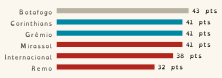
Hoje 20h: São Paulo × Remo · Sex 20h: Fluminense × Cruzeiro · Sáb 21h: Botafogo × Bahia · Dom 16h: Coritiba × Flamengo e Vitória × Santos · 18h30: Corinthians × Grêmio, Mirassol × Athletico-PR, Inter × Bragantino · 19h30: Atlético-MG × Vasco. 38ª: todos em 2/12, às 21h30.
Clássico na Fares Lopes. Na quarta (25), no Presidente Vargas, Fortaleza e Ceará empataram por 1 a 1: Pinna marcou aos 43 do 1º tempo e Ziegler empatou de pênalti nos acréscimos. Nas cobranças, o Ceará venceu por 6 a 5 (O Povo).
Vila Real. O time de Sobral goleou o Atlético Cearense por 5 a 1 no Estádio do Junco, em 22/11, com três gols de Jailson, e garantiu vaga na semifinal. O Icasa também está classificado.
Fortaleza. Na ida do mata-mata de acesso, o Criciúma venceu por 1 a 0, gol de Marcelo Hermes. A volta é no sábado (28), às 20h, na Arena Castelão. Vitória por qualquer placar dá o acesso ao Fortaleza, que teve melhor campanha; empate ou derrota sobem o Criciúma. Não há pênaltis (GC Mais).
Ceará SC. Terminou a Série B em 16º, com 44 pontos, e segue na segunda divisão em 2027.
Cearense 2027. Guarany de Sobral e Vila Real disputam a Série B estadual. A Série A terá Fortaleza, Ceará, Ferroviário, Floresta, Iguatu, Horizonte, Maranguape, Maracanã, Itapipoca e Icasa. O Junco não aparece nas duas listas (Sobral em Revista, 30/9).
Outros cearenses. O Floresta seguirá na Série C, que terá 24 clubes em 2027, e renovou com o técnico Leston Júnior; o Ferroviário anunciou Ricardo Lima para 2027.
Nordeste. Na Série A, o Bahia é 6º (54 pontos) e o Vitória, 13º (44). Na Série B, CRB terminou em 7º e Sport em 9º, sem nordestinos rebaixados. O Santa Cruz subiu da Série C para a B; ABC e ASA sobem da D para a C. A Copa do Nordeste de 2027 vai de 24/3 a 13/6.
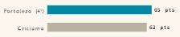
✅ Vila Real (Sobral) · ✅ Icasa · ✅ Ceará · ⏳ Tirol ou Guarani de Juazeiro.
Jogo de sábado à noite, mas o dia terá até 40 °C no interior: leve água, chapéu e evite álcool em jejum na estrada.
Champions (25/11). PSG 2 × 2 Roma, com gols de Hermoso e Malen para os italianos e de Zabarnyi e Dembélé, de pênalti; Club Brugge 0 × 3 Liverpool, dois de Isak e um de Wirtz; Inter 2 × 0 Stuttgart (Flashscore). Ao fim da 5ª rodada, o Real Madrid lidera com 15 pontos, à frente de PSG (13) e Como (12), segundo o Terra.
Europa League hoje. Às 14h45, Olympiacos × Milan e Plzeň × Benfica; às 17h, Juventus × Omonia e Crystal Palace × Real Sociedad.
Libertadores. A final é Palmeiras × Estudiantes, sábado (28), às 17h, no Centenário. O Palmeiras eliminou o Fluminense nos pênaltis; o Estudiantes tirou o Flamengo (CNN Brasil). Na Sul-Americana, o Boca venceu o Atlético-MG por 2 a 0 em Barranquilla, em 21/11, e conquistou o 3º título.
Fórmula 1. Kimi Antonelli é campeão de 2026 e a Mercedes, de construtores. No Catar, sem sprint, os treinos livres são na sexta (10h30 e 14h), a classificação no sábado (15h) e a corrida no domingo (29), às 13h. Em disputa: o vice entre pilotos e o 3º lugar entre equipes, com a Red Bull 9 pontos à frente da McLaren.
Copa Davis. Em Bolonha, a Itália bateu a Coreia do Sul por 2 a 1 e enfrenta a Tchéquia na semifinal. Hoje: Alemanha × Grã-Bretanha e Áustria × Espanha, com Alcaraz. Final no domingo (Gazeta Esportiva). João Fonseca, 41º do ranking, está afastado do circuito e volta em dezembro.
Motor e lutas. A final da Stock Car é em Interlagos, de 11 a 13/12; Felipe Fraga lidera. Não há evento do UFC neste fim de semana.
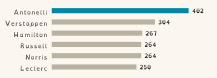
Mercedes 666 · Ferrari 517 · Red Bull 440 · McLaren 431 · Racing Bulls 114 · Alpine 87 · Haas 31 · Audi 28 · Williams 16 · Aston Martin 7.
Seleção. Brasil × Japão será no domingo (29), à 1h55 de Brasília, no Edion Peace Wing, em Hiroshima. O técnico Arthur Elias chega a 50 jogos. O segundo amistoso é em 5/12, às 3h, em Okayama (O Observador, 22/11). Marta e Kerolin, lesionada, não foram convocadas.
Temporada de clubes. O Cruzeiro conquistou a Libertadores Feminina de forma inédita, em 31/10, em Quito, nos pênaltis contra o Corinthians; o São Paulo ganhou o Brasileirão Feminino A1 em outubro. Contexto
Superliga masculina. Na quarta (25), o Vôlei Renata venceu o Montes Claros por 3 a 2, de virada. O Sada Cruzeiro lidera com 18 pontos, à frente do Renata (16) e do Minas (14, invicto). Sada Cruzeiro × Minas é na sexta (27), às 21h (WebVôlei).
Superliga feminina. Na rodada de segunda (23), o Sesc RJ Flamengo bateu o Osasco por 3 a 1 e o Sesi Bauru venceu o Gerdau Minas por 3 a 2. Lideram Sesc RJ Flamengo (21 pontos, 7 vitórias), Bauru (19) e Minas (18).
Basquete. No NBB, o Minas era o único invicto (7 a 0) na última atualização localizada, de 11/11 (Lance!). Resultados mais recentes do NBB e da NBA não foram confirmados no fechamento. Contexto
Lutas. Próximos eventos do UFC: Riad em 5/12 e UFC 335 em 12/12, com Charles do Bronx × Diego Lopes e Alex Poatan × Pavlovich (Diário do Pará).
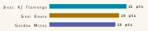
Jogo à 1h55 depois de plantão? Assista ao compacto de manhã. Sono vale mais que o 1º tempo ao vivo.
Tiangong. Muhammad Zeeshan Ali, do Paquistão, tornou-se o primeiro estrangeiro a entrar na estação espacial chinesa, a bordo da Shenzhou-24. A acoplagem ocorreu cerca de 6 horas depois do lançamento, e a missão dura de 5 a 10 dias (Olhar Digital, 25/11).
Quasar recorde. O telescópio Euclid, da ESA, detectou um quasar que surgiu cerca de 630 milhões de anos após o Big Bang, com buraco negro central de aproximadamente 90 vezes a massa do da Via Láctea (Astronomy and Astrophysics, 24/11).
A balança da galáxia. Um cálculo com 10.036 estrelas do DESI e dados do Gaia estima a massa da Via Láctea em 1,19 trilhão de sóis, com incerteza de 11%. É um preprint, ainda sem revisão por pares.
Games. GTA VI saiu em 19/11 para PS5 e Xbox Series, sem data para PC; no Brasil custa a partir de R$ 449,90 (O Povo). No The Game Awards 2026, em 10/12, concorrem a Jogo do Ano 007 First Light, Control Resonant, GTA VI, Phantom Blade Zero, Resident Evil Requiem e o remake de Zelda: Ocarina of Time.
Cinema. Estreiam hoje Entrando Numa Grande Fria, a animação Enfeitiçadas: Bem-Vindos a Hexe, O Sentido da Vida, de Ryūsuke Hamaguchi, e o documentário Dona Onete, entre outros (AdoroCinema).
50 anos. Em 26/11/1976, o nome "Microsoft" foi registrado no Novo México. No mesmo dia, em 1922, nascia Charles Schulz, pai do Snoopy.
A luz do quasar do Euclid viajou mais de 13 bilhões de anos. O que o telescópio vê é o objeto como era quando o universo tinha menos de 5% da idade atual.
Mundo aberto gigante é ímã de hiperfoco. Antes de jogar, programe um alarme para a hora de parar e deixe o controle longe da cama.
Ranking. Na parcial de 1º a 18/11 da Fenabrave, a Fiat Strada somou 7.786 emplacamentos, seguida por VW Polo (6.211), VW Tera (5.914), Fiat Argo (5.160) e VW T-Cross (5.155). Depois vêm Mobi, BYD Dolphin Mini, Yaris Cross, HB20 e Fastback (Webmotors, 19/11). O total do mercado não foi divulgado na parcial.
Recall. A Ford convocou picapes Ranger 2026/2027 nas versões Black, XL, XLS e XLT: a tela de 10,1 polegadas pode apagar e desligar junto a câmera de ré e o ar-condicionado. O reparo só deve começar no 1º trimestre de 2027 (Canaltech, 18/11). Consulte o chassi no site da montadora.
Sete cuidados da Webmotors. Acompanhe o preço semanas antes; peça o CET e o total financiado; desconfie de "só hoje"; no seminovo, cheque débitos, sinistro e leilão; compare o bônus de troca com a Tabela Fipe; exija tudo por escrito, inclusive emplacamento; online, nunca pague para conta de terceiro.
Direito. O arrependimento de 7 dias do art. 49 do CDC vale para compras fora do estabelecimento, como internet e telefone. Na concessionária, assinou, comprou.
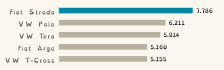
Nunca deixe criança, idoso ou animal no carro fechado, nem por "um minuto". Cheque líquido de arrefecimento e pneus antes da estrada.
1) Débitos e multas no Detran · 2) gravame de financiamento · 3) histórico de sinistro e leilão · 4) recall pendente pelo chassi · 5) vistoria cautelar e mecânico de confiança antes de qualquer sinal.
Golpe provável. O jogo custa a partir de R$ 449,90 nas lojas oficiais. Chave barata em site desconhecido costuma ser fraude ou revenda irregular.
Golpe do QR adulterado. Antes de confirmar, veja o nome do recebedor no app do banco.
Golpe. Loja séria estorna pelo mesmo meio de pagamento. Ninguém pede Pix para "cancelar".
Loja clonada. Endereço parecido com o da marca e pressa no relógio. Digite o site você mesmo.
Risco alto. Em marketplace, pague só dentro da plataforma. Fora dela, não há proteção.
Sinal de alerta. Depoimentos comprados são tática citada pela Febraban. Consulte o CNPJ e a reputação.
Números. Segundo dados citados pelo Itaú, a Febraban registrou 174 mil casos de falsa venda no 1º semestre de 2025, alta de 314%; a Serasa contou 604 anúncios falsos na semana da Black Friday de 2025, alta de 147%. A Confi Neotrust projeta R$ 13,3 bilhões no comércio eletrônico de 26 a 29/11.
Medo e checagem. Levantamento citado pelo Correio 24 Horas indica que 83,2% dos brasileiros temem fraude nas compras e 69,1% consultam o Reclame Aqui antes de comprar.
Senacon. Compare preços antes, confira o CNPJ ativo, não clique em links de SMS ou WhatsApp e digite o endereço da loja (orientação de 10/11).
Lema da Febraban. "Pare, pense e desconfie."
Viu, quis? Coloque no carrinho e espere 72 h. Se ainda fizer sentido e couber no orçamento, compre no site oficial.
Rio. O Procon-RJ monitora 90 produtos em 10 lojas. Uma geladeira passou de R$ 2.269 para R$ 8.139,64 entre 22/10 e 12/11, alta de 258,7%; um notebook subiu 110,4%. Em 56,7% dos itens, a diferença entre o maior e o menor preço passa de 50% (Diário do Rio, 18/11).
Vitória. O Procon municipal encontrou 7 de 10 produtos mais caros na semana, com variação média de 44,43% (A Gazeta, 18/11).
Ano passado. Estudo da Timelens sobre 2025 apontou que 45,4% dos produtos não tiveram desconto real na Black Friday (Mercado&Consumo).
Comparadores. Zoom, Buscapé, Google Shopping, Vigia de Preço, Keepa, Promobit e Pelando mostram histórico ou alertas de preço (O Povo, 17/11).
Atualizações. iPhone: iOS 27.2.1 (antigos: 26.7.3 e 18.7.12). Pixel: Android 17 QPR2. Windows 11: KB5132057, opcional. Atualize antes de comprar pelo celular: correção de segurança protege o app do banco.
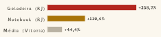
| Situação | Veredito |
|---|---|
| Item da lista, preço abaixo do histórico | ✅ Pode decidir |
| Item fora da lista, "só hoje" | ⏳ Esperar 72 h |
| Parcelado sem caber no mês | 🛑 Não comprar |
| Loja desconhecida, Pix com desconto | 🛑 Não comprar |
Desative notificações de lojas até domingo. Promoção que chega por alerta é a que o impulso compra.
O que preciso · teto em reais · loja onde já comprei bem. Tudo que não couber nessas três linhas espera até segunda.
Primeiro o SAC da loja, com protocolo anotado. Sem solução, registre no consumidor.gov.br ou no Procon da sua cidade. Guarde e-mails, nota e prints numa única pasta do celular.
A doutrina, com fidelidade. A filosofia Bastter, criada por Maurício Hissa, parte de ideias simples: o patrimônio nasce da renda do trabalho; aporta-se todo mês, sem tentar acertar a hora de comprar ou vender; mantém-se o que se comprou por muito tempo e busca-se "paz financeira", longe do excesso de notícias. A renda fixa serve para preservar o poder de compra. A doutrina também inclui ações; este jornal apenas registra isso e não trata do tema.
Poupança. Com a Selic acima de 8,5%, rende 0,5% ao mês mais TR. Em novembro, a TR de 0,1616% levou o rendimento a 0,6624%; em dezembro cai para 0,6202%. Em 12 meses, acumulou 8,29%, isenta de IR (Rankia).
Tesouro (25/11, 11h15). Selic 2031: Selic + 0,11%. Prefixado 2029: 14,89%. Prefixado 2032: 15,27%. IPCA+ 2040: IPCA + 7,54%. Taxas mudam ao longo do dia (InvestNews).
Imposto. A tabela regressiva continua: 22,5% até 180 dias, 20% até 360, 17,5% até 720 e 15% acima. A MP 1.303/2025, que mudava a regra e tributava LCI e LCA, perdeu a validade em outubro de 2025; LCI e LCA seguem isentas para pessoa física.
FGC. Garante até R$ 250 mil por CPF por instituição, com teto de R$ 1 milhão a cada 4 anos. Tesouro Direto não depende do FGC: é dívida do governo federal.
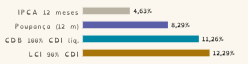
A 1ª parcela do 13º deve ser paga até segunda (30/11). Quem recebe em conta-salário pode programar a transferência no mesmo dia.
Carro é bem de consumo: perde valor todo ano e custa IPVA, seguro e manutenção. Compre pelo uso real, compare com a Tabela Fipe e consulte débitos, gravame e recall antes de pagar.
Sinal, entrada ou reserva "para garantir hoje" é urgência artificial. Espere 72 h.
Advogado para contrato, contador para imposto e corretor com Creci ativo para imóvel.
Decisão grande nunca depois do plantão: cansaço aumenta o impulso. Marque a assinatura para um dia de folga.
Li tudo, inclusive multas e prazos? · Sei o custo total, com impostos e taxas? · Um profissional leu? · Dormi pelo menos duas noites sobre a decisão? · Tenho cópia assinada e comprovante de cada pagamento?
O dólar caiu em três pregões seguidos e fechou a quarta em R$ 5,817; a Selic está em 13,75% até o Copom de 8 e 9/12 (págs. 4 e 20).
O PLP 299 foi remetido à sanção em 24/11; o prazo para sanção ou veto vai até 14/12, segundo o Congresso Nacional (pág. 2).
O Irã relatou um navio de gás em chamas em Ormuz, sem confirmação independente, e o Brent subiu 3,51% (págs. 4 e 5).
Corinthians, Grêmio e Mirassol têm 41 pontos a duas rodadas do fim (pág. 12). O Fortaleza precisa vencer o Criciúma no sábado; o empate sobe o adversário (pág. 13). O Procon-RJ viu uma geladeira subir 258,7% antes da Black Friday (pág. 19). Willis Carrier nasceu há 150 anos, e hoje o Ceará pode chegar a 41 °C (págs. 3 e 6).
Egito. Papiros médicos egípcios, de mais de 3 mil anos, já recomendavam mel sobre feridas. A ciência moderna explica parte do efeito: o mel é ácido, muito concentrado em açúcar e produz pequenas quantidades de peróxido de hidrogênio. Uma revisão Cochrane de 2015 achou cicatrização mais rápida com mel do que com curativos convencionais em queimaduras de espessura parcial, com evidência moderada.
Paré. O cirurgião francês do século XVI relatou ter testado a receita de uma velha senhora, cebola crua com sal, em metade do rosto de um soldado queimado por pólvora, deixando a outra metade sem ela. Comparar lados é uma ideia que só se formalizaria séculos depois nos ensaios clínicos.
Sertão. Rezadeiras e benzedeiras do Ceará usam ramos, orações e o sinal da cruz para "tirar o fogo" ou o "cobreiro", nome popular do herpes-zóster. O valor de acolhimento é real; o vírus, porém, responde a antiviral iniciado cedo, idealmente em até 72 h do início das lesões.
Hoje. Com o Ceará em emergência ambiental por risco de incêndio, a regra mais útil é antiga e simples: água corrente fria por até 20 minutos, retirar anéis e roupas, cobrir com plástico limpo e procurar atendimento.
| Água corrente fria por até 20 min | ✅ Recomendado |
| Mel em queimadura superficial, com orientação | 🟡 Evidência moderada |
| Pasta de dente, manteiga, borra de café | 🔴 Pode infectar e aprofundar |
| Gelo direto na pele | 🔴 Lesa mais o tecido |
| Reza para "tirar o fogo" como conforto | 🟡 Acolhe; não trata |
| Benzer o cobreiro em vez de antiviral | 🔴 Atrasa o tratamento |
Pergunte sem julgar o que foi passado na pele. Remova o produto com soro, avalie profundidade e vacina antitetânica. Respeite a reza da família e explique o curativo.
O dia. Em 26/11/1922, Carter abriu uma fresta na porta selada e, à luz de vela, viu ouro e objetos na antecâmara. Perguntado se via algo, respondeu, segundo o próprio relato, "coisas maravilhosas".
A morte. Lord Carnarvon, financiador da escavação, morreu no Cairo em abril de 1923. Uma picada de mosquito infeccionou ao ser cortada com a navalha; vieram erisipela, sepse e pneumonia, numa era sem antibióticos.
A lenda. Jornais que não tinham a exclusividade da cobertura, vendida a um único diário londrino, ajudaram a espalhar a ideia de uma maldição. Escritores famosos deram eco. A "inscrição da maldição" nunca foi encontrada no túmulo.
A ciência. Em 2002, um estudo de coorte histórica no BMJ comparou 25 ocidentais presentes nas aberturas com outros que não estiveram lá e não achou diferença significativa de sobrevida. Esporos de fungos na tumba são hipótese citada com frequência, sem prova ligada a Carnarvon.
Geopolítica da memória. O Grande Museu Egípcio, em Gizé, abriu oficialmente em novembro de 2025 com o acervo de Tutancâmon reunido. O Egito reivindica peças levadas no período colonial, como a Pedra de Roseta, no Museu Britânico, e o busto de Nefertiti, em Berlim. Contexto
Da Idade Média ao século XVIII, boticas europeias vendiam "pó de múmia" contra hematomas e outras queixas. A palavra vem do persa mūm, cera, e mūmiyā, betume. Um caso antigo de produto que vendia pela fama, não pelo efeito.
A "maldição" é um caso clássico de pânico alimentado por imprensa em disputa. Hoje o mecanismo se repete em boatos de saúde: uma morte real, uma explicação sobrenatural e muitos compartilhamentos.
Nome popular de práticas voltadas a proteção, harmonia e cura. Na Renascença, pensadores separavam a "magia natural" da magia proibida. Não é tratamento médico, e este jornal não ensina rituais.
Qui 26: Ação de Graças nos EUA · Dom 29: 1º Domingo do Advento · Seg 30: Santo André · Sex 4/12: Santa Bárbara e início do Hanucá.
"Faraó" vem do egípcio per-aa, "casa grande": o palácio deu nome ao rei.
De que morreu Carnarvon? Que revista testou a "maldição"? De onde vem a palavra múmia?
Sêneca · Cartas a Lucílio, 2
"Não é pobre quem tem pouco, mas quem deseja mais."
Para o estoico, a pobreza mora no apetite, não na conta bancária.
Lao-Tsé · Tao Te Ching, 33
"Quem sabe que tem o bastante é rico."
O sábio taoista mede a riqueza pela paz, não pelo acúmulo.
Buda · Dhammapada, 204
"O contentamento é a maior riqueza."
O desejo sem fim é uma das raízes do sofrimento; reconhecê-lo já alivia.
Talmude · Pirkei Avot 4:1
"Quem é rico? Quem se alegra com a sua porção."
A pergunta muda o foco: riqueza é alegria com o que já se tem.
Alcorão · 7:31
"Comei e bebei, mas não vos excedais."
O excesso, mesmo do que é lícito, é tratado como falta de medida.
Bíblia · 1 Timóteo 6:6
"Grande ganho é a piedade com contentamento."
Paulo escreve que o ganho verdadeiro vem com a medida, não com a pressa.
Nenhuma das seis tradições condena possuir coisas. O que elas chamam de honra é o domínio de si: comprar porque precisa, não porque um relógio na tela mandou. A temperança não é sovinice; é a medida certa entre o descuido e a avareza. Em linguagem de hoje, é decidir antes do anúncio, com lista e com teto, e manter a palavra dada a si mesmo quando aparece o "só hoje".
Conta a tradição que Diógenes, o cínico, jogou fora sua tigela ao ver um menino beber água com as mãos. É lenda, mas a lição atravessou 2.400 anos: a gente costuma carregar mais do que precisa.
O que você compraria amanhã que já não estava na sua lista de ontem? Se a resposta vier rápido, espere 72 h.
Vem do latim temperare, misturar na proporção certa. É a mesma raiz de "temperatura" e de "temperar" a comida: nem demais, nem de menos.
O cérebro com TDAH valoriza o agora mais que o depois. A virtude vira método: lista escrita antes, cartão salvo apagado do app e um "amanhã eu decido" dito em voz alta.
Escreva o teto da Black Friday num papel e cole no espelho. Palavra escrita é palavra dada.
O Código de Defesa do Consumidor proíbe a publicidade enganosa (art. 37) e manda cumprir a oferta anunciada (art. 30). Desconto calculado sobre um preço que subiu pouco antes engana o cliente. Para quem vende como MEI, honra é preço claro, nota emitida e troca respeitada; é também o que mais traz o cliente de volta.
Nos EUA, hoje é dia de agradecer. A ideia vale aqui: agradecer pelo nome ao técnico de enfermagem, ao maqueiro e à equipe da limpeza que cobrem a madrugada.
| Situação | Saída honrada |
|---|---|
| Vendedor promete "só hoje" | Agradecer e voltar em 72 h |
| Colega pede para "fechar os olhos" a um registro | Recusar com calma e registrar o fato |
| Esqueceu um compromisso | Avisar antes, pedir desculpas e propor nova data |
| Recebeu troco a mais | Devolver na hora |
| Paciente pergunta algo que você não sabe | "Vou confirmar e volto em X minutos" |
Eu faria isso se estivesse na capa do jornal de amanhã? Se a resposta for "não", ainda dá tempo de mudar.
Promessa que não cabe na agenda vira falta de palavra. Antes de dizer "sim", olhe o calendário. Um "posso te responder amanhã?" protege a honra.
Escolha uma promessa pequena (devolver um livro, responder um e-mail, pagar uma conta) e cumpra hoje. A confiança dos outros, e a sua em você, é feita de promessas pequenas cumpridas.
Do latim honor, que primeiro significava reconhecimento público e cargo. Com o tempo, passou a nomear o que a pessoa é quando ninguém está olhando.
Que promessa feita a você mesmo você mais adia? Qual é o menor passo para cumpri-la hoje?
Umidade. A Funceme prevê umidade mínima entre 20% e 35% hoje. Pela escala usada pela Defesa Civil, abaixo de 30% já é estado de atenção e abaixo de 20%, de alerta. Olhos ardendo, nariz sangrando e garganta seca são os sinais mais comuns.
O que ajuda. Água ao longo do dia, soro fisiológico no nariz, colírio lubrificante sem vasoconstritor, uma bacia ou toalha úmida no quarto e exercício só cedo ou à noite.
Fumaça. Em dia de queimada perto de casa, feche janelas na hora da fumaça. Quem tem asma ou DPOC deve ter o plano de crise à mão; máscara PFF2 bem ajustada filtra parte das partículas.
Impulso. Estudos associam o TDAH a mais compras por impulso e a mais arrependimento depois. Não é falta de caráter: é o sistema de recompensa pesando mais o agora. A saída é tirar a decisão do momento quente.
Três travas. Lista escrita antes; cartão salvo apagado do app; e a regra das 72 h para tudo que não estava na lista.
| Soro fisiológico no nariz no ar seco | ✅ Seguro e útil |
| Bacia de água no quarto | 🟡 Ajuda pouco, sem dano |
| "Molhar o chão" para refrescar | 🟡 Alívio curto; cuidado com quedas |
| Exercício ao meio-dia no sertão | 🔴 Risco de intermação |
Se eu não visse o anúncio, eu compraria? Tenho onde guardar? O preço está no histórico? Posso esperar 72 h? Um "não" já basta para esperar.
Notificações de lojas desligadas até domingo. O que não aparece na tela, o impulso não compra.
1 minuto: um copo d'água e soro no nariz. 1 minuto: três respirações lentas longe da tela. 1 minuto: escrever o que vai comprar amanhã, com o teto ao lado.
Falta de ar que não melhora com o remédio de resgate, sangramento nasal que não para após 20 minutos de compressão, confusão, febre alta com pele seca e quente, ou criança e idoso que param de urinar.
A Lua foi cheia na terça (24), uma superlua. Agora está minguante e nasce cada noite mais tarde; o quarto minguante é em 1º/12. Sem Lua no início da noite, o céu fica melhor para ver estrelas longe das luzes da cidade.
Hoje é o Dia Mundial da Oliveira (Unesco), árvore que vive séculos com pouca água. No sertão, o juazeiro faz papel parecido: mantém as folhas verdes na seca e dá sombra a gente e a bicho. Regue as plantas de casa cedo ou à noite, nunca no sol forte.
Casais em que um dos dois tem TDAH se beneficiam de regras simples e combinadas: contas automáticas, um teto de gasto livre para cada um e uma conversa curta e marcada sobre dinheiro, sem culpa. Para amanhã: combinem juntos o teto da Black Friday. A revista ADDitude tem um bom guia sobre o tema.
Água oferecida de hora em hora (criança não pede), chapéu, protetor solar e brincadeira na sombra entre 10h e 16h. Nunca deixar criança no carro.
Uma etiqueta "ÁGUA" na geladeira e um alarme às 15h para a família inteira beber. Lembrete visível vence a memória.
Sábado cedo: 20 minutos de caminhada na sombra, sem celular. Domingo à noite: olhar o céu por 5 minutos, longe das luzes. Simples, de graça e bom para o sono.
Quando é o quarto minguante? Que árvore do sertão fica verde na seca? Para que lado vira o cabo da panela?
No app Tempo, toque em "Notificações" e ative alertas de clima severo para sua cidade. No iOS 27.2.1, confira em Ajustes › Notificações › Tempo.
Ajustes › Tempo de Uso › Limites de Apps › Compras: 15 minutos por dia até domingo. O limite cria uma pausa antes do impulso.
Win + R abre a caixa Executar; digite "control" para o Painel ou "msinfo32" para ver a versão do sistema antes de instalar prévias como a KB5132057.
Antes de pagar, cole o nome do produto num comparador com gráfico de 90 dias. Desconto de verdade aparece abaixo da linha média.
Se você vende online, mostre o preço anterior com data, CNPJ e política de troca. Isso cumpre o CDC e aumenta a confiança do cliente.
Produto digital feito com IA (guia, planilha, curso curto): revise fatos, use imagens próprias ou licenciadas, diga que usou IA e teste com 5 pessoas antes de cobrar.
Amanhã, tudo que não estava na lista vai para o carrinho com data. Abra de novo na segunda. O que sobrar foi desejo de momento.
Água corrente fria por até 20 minutos, nada de pasta de dente ou manteiga, e atendimento se for grande, profunda ou no rosto, mãos ou genitais.
Congresso Nacional, CNN Brasil, Money Times, BPMoney, IstoÉ Dinheiro, InfoMoney, O Povo, Diário do Nordeste, CN7, Sobral em Revista, Prefeitura de Sobral, Reuters, Al Jazeera, OMS, Opas, ECDC, JAMA, MacRumors, BleepingComputer, Gazeta Esportiva, Futebol Interior, Rankia, InvestNews e diretrizes citadas em cada página.
Dólar e juros em queda, Golfo em tensão, Ceará a 41 °C com ar seco e mpox em alta. Amanhã é Black Friday: lista, teto e 72 h.
Hoje, em 5 minutos: encha uma garrafa de 1 litro, escreva a lista de amanhã com teto e desligue as notificações de lojas.
Confiar no oxímetro do queimado, contar eritema na SCQ, suspender alopurinol na crise e comprar por "só hoje".
Jornal Diário 360 · Radar 360 Circunstancial · edição nº 020 · quinta-feira, 26/11/2026 · 31 páginas · fechamento na noite da véspera (25/11). ALDENIR ROCHA DE OLIVEIRA FILHO · PROJETO 360X. Produção: Agente Editorial 360, com o Claude (Anthropic). Gráficos, tirinhas e ilustrações originais; nenhuma foto de terceiros. Notícias resumidas com fontes datadas. Conteúdo de saúde educativo: siga o protocolo institucional. Conteúdo financeiro educativo: o jornal não é consultor financeiro. O jornal não toma partido. Correções: informe pela página do Jornal 360 no site.
Por que agora: em 19/11, na Câmara, a direção relatou déficit de cerca de R$ 3 milhões por mês e pediu emendas e doações (Sobral em Revista).
Quem é: hospital filantrópico de alta complexidade, referência para 55 municípios.
Como ajudar: só pelos canais do site oficial ou pela própria instituição.
⚠ PIX não conferido hoje: o site não abriu na checagem; não use chave de terceiros
Por que agora: o Ceará decretou emergência em 65 municípios pelo El Niño em 13/11 (Diário do Nordeste), e a seca atinge 100% do estado (Monitor de Secas, via O Povo+, 17/11).
Quem é: ONG contra a fome e a miséria com atuação contínua em povoados do sertão.
Como ajudar: PIX pelo QR ao lado; o app deve mostrar AMIGOS DO BEM INSTITUIÇÃO NACIONAL CONTRA A FOME E A MISÉRIA, CNPJ 05.108.918/0001-72.
✔ Chave conferida no site oficial em 25/11/2026 (noite): doeagora@amigosdobem.org
Por que agora: campanha lançada em 16/11; a FAO estima que 44,8 milhões de brasileiros não conseguiram pagar uma dieta saudável em 2025 (Brasil de Fato, 16/11).
Quem é: ONG criada por Betinho contra a fome, com rede nacional de comitês.
Como ajudar: botão "Doe agora" do site oficial. CNPJ no rodapé: 00.346.076/0001-73.
⚠ Site sem chave PIX publicada: use só o botão oficial (conferido em 25/11/2026)
Por que agora: em 4/11, o MSF alertou para surtos de sarampo e coqueluche em Darfur e para o bloqueio à entrada de vacinas.
Quem é: organização médico-humanitária internacional, independente de governos.
Como ajudar: "Doação única" no site oficial. CNPJ na página: 13.844.894/0001-48.
⚠ Sem chave PIX publicada: doe só pelo site oficial (conferido em 25/11/2026)
| Quem | O que divulgou | Fonte e data | 📸 Comprovação | |
|---|---|---|---|---|
| Governo do Ceará · Natal Ceará Sem Fome | Meta de 100 mil brinquedos novos; coleta em prédios do Estado até 30/11 e no Centro de Eventos de 1º a 7/12. | O Povo, 7/11 | ||
| Instituto Aegea + Ambiental Ceará · Caucaia | Ação gratuita com vacinação, consultas, CadÚnico e vagas do Sine, com Cagece e Prefeitura. | GC Mais, 5/11 | ||
| Fundação Manoel da Silva Almeida + Hospital Maria Lucinda · Recife | Novembro Azul no Marco Zero: orientação, pressão e glicemia, dom 29/11, 8h–12h. | Folha PE, 25/11 | ||
| Mosaic Fertilizantes + Multitrans · São Luís | Cestas básicas para 125 instituições do Banco de Alimentos estadual. | O Imparcial, 24/11 | ||
| Natal na Estrada · CE-040 | Associação arrecada cestas, roupas e brinquedos para carreata de Natal em Caucaia e Caridade. | GC Mais, 24/11 |
Reprodução do que cada fonte divulgou, sem conferência independente; não é endosso nem publicidade paga. 📸 O QR abre a página da fonte com fotos ou relato; ícones originais, sem imagens de terceiros. Contatos pessoais citados nas fontes não são reproduzidos.
Ajuda de Boa: causas com PIX conferido na fonte.
Auditoria das Coisas 360X: sugira uma auditoria.
A Prefeitura lançou em 25/11 um aplicativo para adoção responsável de cães e gatos. Sexta (27), 8h: mais de 100 vagas no Sine do Vapt Vupt. Hospital do SUS não cobra por PIX nem WhatsApp.